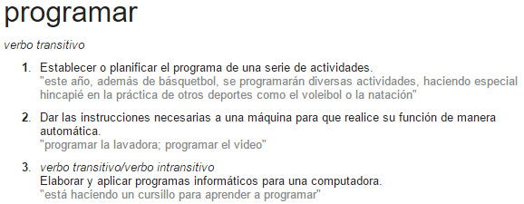
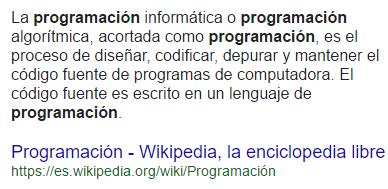
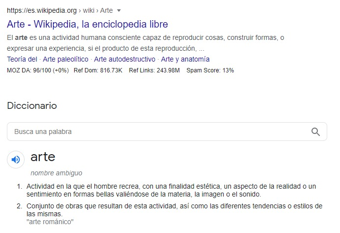
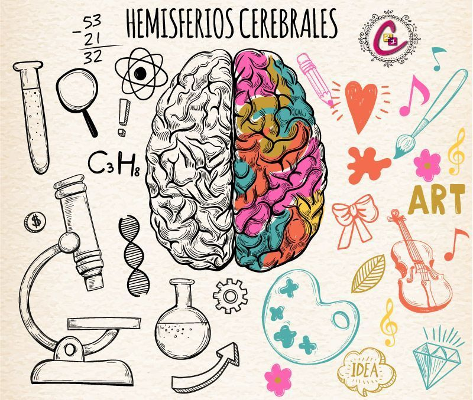
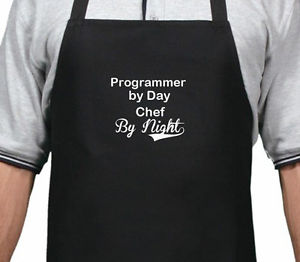
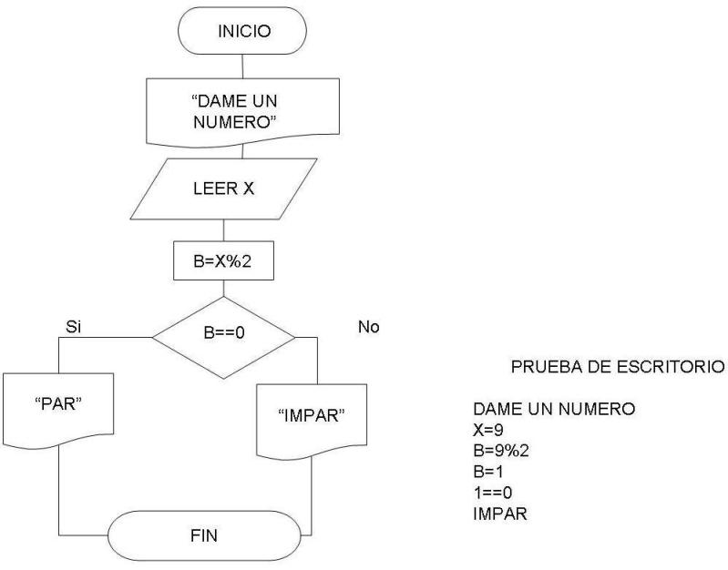

Hablemos de Programación


La gente cree que programar es difícil...
Algunas teorías
- MATEMÁTICAS
- MALOS Profesores
- Programadores SOBERBIOS
Mi teoría
HUMANOS que NO les gusta:
- SER CONSCIENTES de su entorno
- PENSAR detalladamente
- ANALIZAR las cosas
¿Qué es la Programación?
Algunas definiciones:
 Tengo un serio problema con esas definiciones

Carecen de vida, alma y espíritu, porque...

PROGRAMAR ES UN ARTE
Y un arte muy parecido a COCINAR

¿No me crees?
Algunas definiciones de Arte:
¿No te convenzo?
Ejemplos de que programar es ARTE
Más ejemplos
PROGRAMAR es ARTE y CIENCIA
EL GRAN ERROR
Enseñar programación, sólo desde el componente CIENTÍFICO dejando de lado el ARTÍSTICO
La PROGRAMACIÓN es:
- Intuitiva e inherente a los humanos.
- Las cosas intuitivas se van a la memoria muscular (dónde no piensas, ¡ejecutas, reaccionas!).
- Desde que te levantas estás programando.
- Deberíamos aprender a programar desde que somos infantes
La PROGRAMACIÓN también es:
- Entender como funcionan las cosas
- Resolver problemas
- Tomar decisiones
- Analizar flujos de información
- Controlar y ejecutar procesos
Para PROGRAMAR debemos
Pensar como HUMANOS y NO reaccionar como MÁQUINAS
es decir...
Pensar PROACTIVAMENTE y NO REACTIVAMENTE
en otras palabras
Entender el QUÉ para después ejecutar el CÓMO
PROGRAMAR ES COMO COCINAR... UNA RECETA
La RECETA de la PROGRAMACIÓN
-
Algoritmo:
Serie de pasos ordenados y finitos para realizar una tarea o resolver un problema.
-
Diagrama de Flujo:
Es es la representación gráfica de un algoritmo.
-
Código de Programación:
Conjunto instrucciones interpretadas y/o compiladas por una computadora.
¿Cómo determino si un número dado, es par o impar?
🤔
Algoritmo
- Ingresar un número.
- Dividir el número en cuestión entre 2.
-
Si el residuo de la división es:
- 0, el número es par.
- 1, el número es impar.
Diagrama de Flujo
Código de Programación (JavaScript)
function parImpar() {
let numero = prompt('Ingresa un número'),
modulo = numero % 2,
par = `El número: ${numero} es Par`,
impar = `El número: ${numero} es Impar`;
return (modulo === 0) ? par : impar;
}
parImpar();Estándares Web
HTML
HyperText Markup Language
Lenguaje de marcado que define estructura y contenido a la web
CSS
Cascading Style Sheet
Lenguaje de definición de estilos que provee diseño y presentación a la web
JS
JavaScript
Lenguaje de programación que provee funcionalidad e interactividad a la web
Muchas gracias